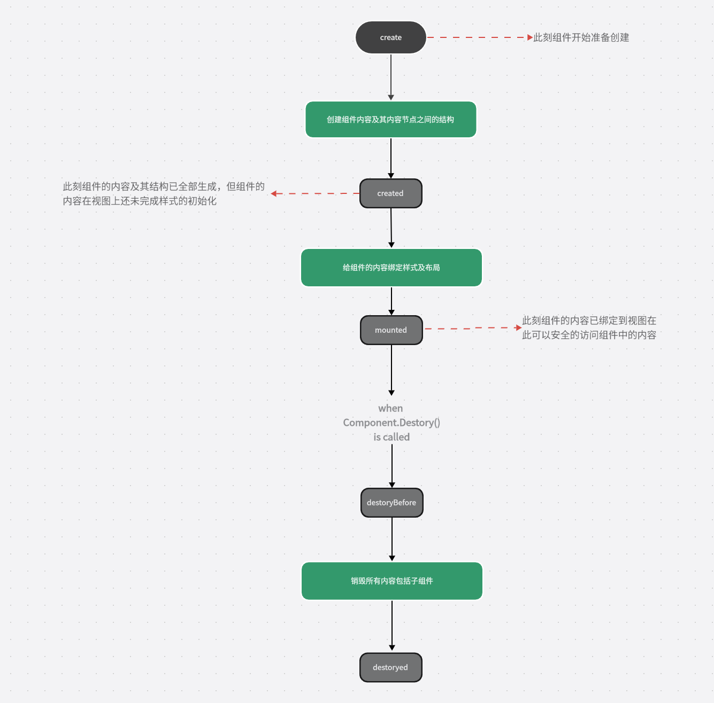

生命周期
组件或Room从开始创建一直到销毁会经过一系列阶段，这些阶段构成组件的整个生命周期，如下图：

- 生命周期钩子
组件在运行到每个生命周期阶段都会运行对应的函数，该函数就是生命周期勾子，开发者可以在此添加自己的逻辑在不同的阶段运行自己的代码。
Example：
以下代码在mounted生命周期勾子函数内通过代码将Button按钮的icon image替找为pause
视图代码：
<>
<!--定义一个存放按钮的容器-->
<>
<!--按钮组件-->
<>
</PanelRoot>
</Root>
mounted 生命周期勾子函数代码：
// mounted生命周期函数，在这里文档内容已绑定给视图
protected override void mounted()
{
// Boutton组件
var playButton = this.getComponentsByName<Button>("playButton")[0];
// 将Button组件的icon image替换成pause
playButton.backgroundImage = "code/Button/source/pause";
}

由运行结果可以看到，以上代码成功的将按钮的图标由原本的play替换成了pause
- 勾子函数列表
| 方法 | 说明 |
| protected virtual void create () | 组件开始创建时被调用，在该阶段无法访问到组件的内容 |
| protected virtual void created () | 组件的内容及其结构已全部生成，但组件的内容在视图上还未完成样式的初始化，在该阶段可以访问到组件的内容但内容的样式还未被设置 |
| protected virtual void mounted () | 组件的内容已绑定到视图并完成了所有样式的设置和内容的布局，在该阶段可以安全的访问到组件的内容 |
| protected virtual void destoryBefore () | 当调用组件的destory方法后该勾子函数会被调用，在该阶段组件的内容仍然存在还未真正的被清理 |
| protected virtual void destoryed () | 组件的所有内容已被完全销毁，此刻用户已无法该问到该组件的内容 |